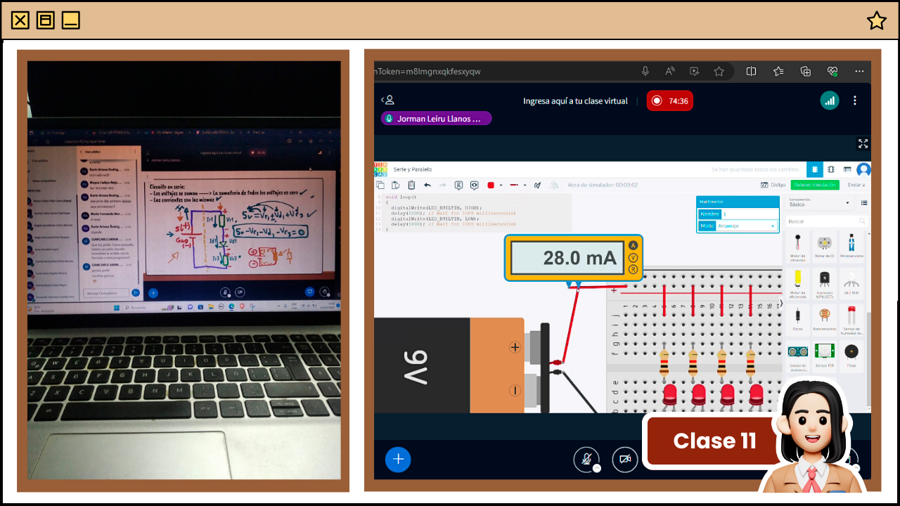
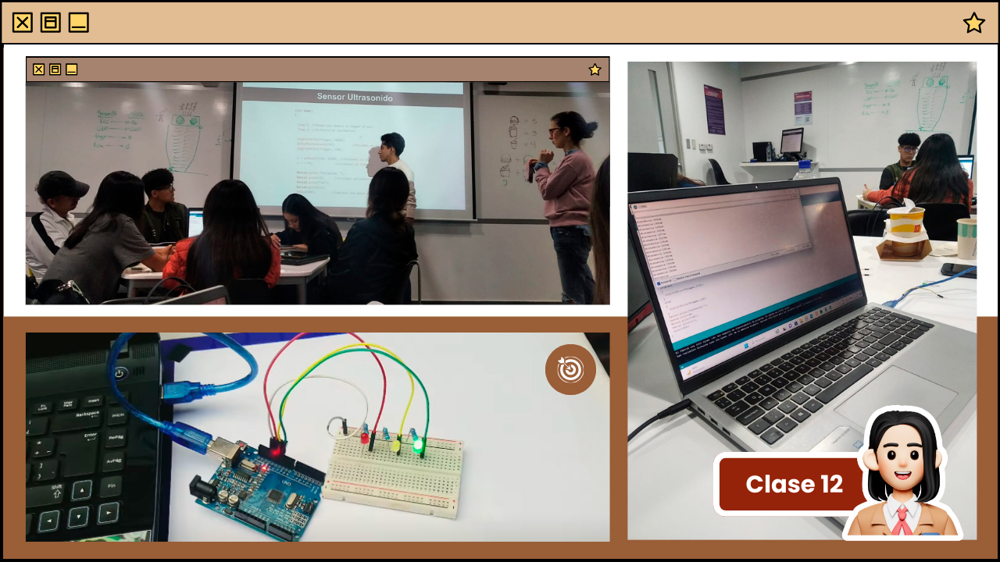
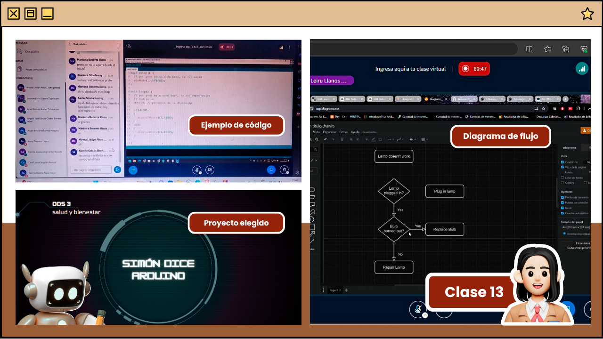
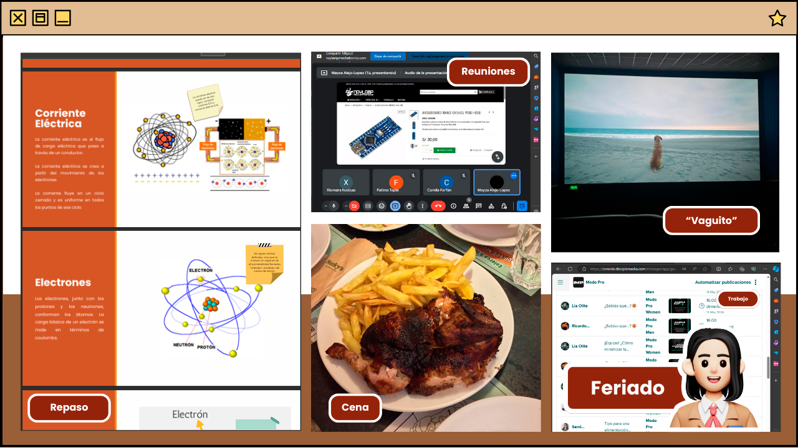
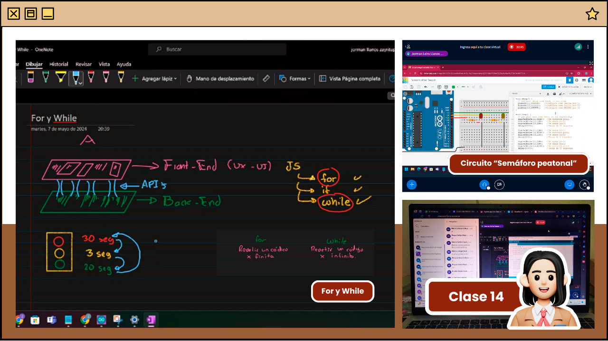
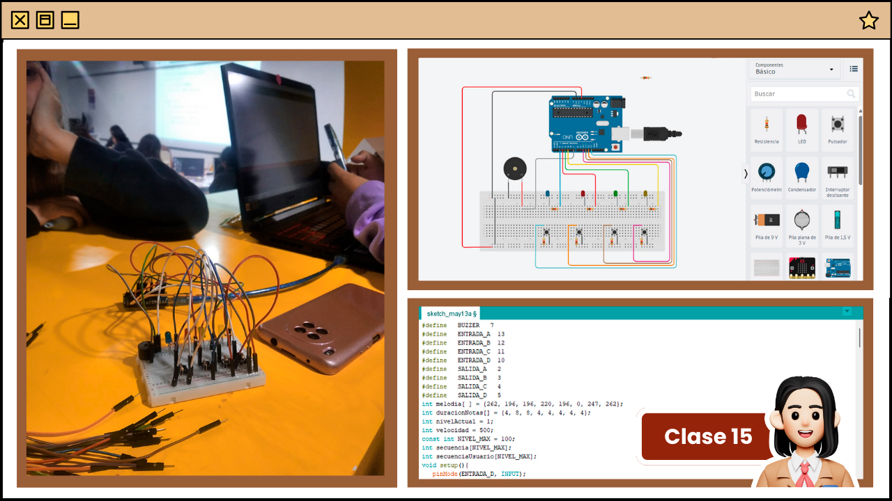

Descripción de clase
En esta sesión, exploramos los fundamentos de los circuitos en serie y en paralelo. Aprendimos que en un circuito en serie, los voltajes se suman y las corrientes son las mismas, lo que fue ilustrado con un gráfico para una mejor comprensión. Mediante un ejemplo práctico en Tinkercad, utilizando componentes como baterías, resistencias, LED, cables y protoboard, identificamos las características clave de un circuito en serie, donde se utilizan dos agujeros en el protoboard. También estudiamos los circuitos en paralelo, donde las corrientes se suman y los voltajes son iguales, con la característica distintiva de tres o más huequitos conectados en el protoboard.
Además, exploramos el uso del medidor de corriente y la conexión en Tinkercad, donde comenzamos a codificar circuitos comprendiendo conceptos como digital write, void loop, void setup, etc. Además, se aclararon las diferencias entre sensores y actuadores, profundizando nuestra comprensión de la electrónica y la programación.

Descripción de clase
En la sesión, nos adentramos en la práctica con el kit Arduino con los conocimientos previos. Trabajamos en grupos para diseñar un circuito que controlara un LED según la distancia detectada por un sensor de ultrasonido. Utilizamos el VCC, GND, Trigger y Echo del componente; sensor ultrasonido, asignándoles valores específicos para codificar correctamente el funcionamiento del circuito.
El profesor nos proporcionó los materiales necesarios para la actividad, incluyendo 2 protoboard, 2 diodos, 2 sensores de ultrasonido y 2 cables. Este ejercicio nos desafió a aplicar la teoría, utilizando conceptos como digitalWrite, Void setup, Void Loop, entre otros. A medida que conectábamos los componentes y escribíamos el código en Arduino, ajustamos valores como la distancia y el tiempo, y utilizamos las directivas HIGH y LOW para controlar el encendido y apagado del LED.
Al observar las lecturas del sensor en el monitor serie, validamos el funcionamiento correcto del circuito y realizamos ajustes adicionales según fuera necesario. Finalmente, desde aquel, visualizamos las distancias captadas por el sensor de ultrasonido, desde la mínima hasta la máxima, alcanzando una lectura de 3014 cm. Para finalizar, el profesor nos propuso otro reto al hacer un circuito similar pero esta vez trabajando con 3 leds.

Descripción de clase
En esta sesión, el profesor dedicó los primeros 30 minutos a repasar los temas abordados hasta el momento, preparándonos para el próximo examen. Recordó conceptos sobre componentes electrónicos, robótica, unidades de la electrónica, circuitos, códigos de Arduino, etc.
Luego, ingresamos al tema del día: diagramas de flujo, los cuales representan procesos mediante símbolos conectados por flechas. Estos diagramas tienen un inicio y un final claramente definidos, lo que ayuda a visualizar y comprender la lógica detrás de un proceso o códigos. Aprendimos sobre su estructura y función, así como la aplicación de instrucciones como IF, ELSE y While, simplificadas con ejemplos prácticos, usando el programa Diagrams.net.
En la última parte de la clase, nos dividimos en grupos para seleccionar el proyecto que desarrollaremos a lo largo del curso: "Simon Dice con Arduino" - ODS 3. Este proyecto tiene como objetivo mejorar la memoria a través de un juego interactivo donde el Arduino controla una secuencia de luces y sonidos, desafiando la capacidad de memorización del jugador. Finalmente, nos organizamos para adquirir los componentes necesarios para el proyecto.

Descripción
En esta sesión no hubo clases debido al feriado por el Día del Trabajador. Aproveché ese día para avanzar en pendientes académicos, entre ellos, trabajé con mi grupo de compañeras en ciertas tareas de algunos cursos. Además, estuve estudiando para el próximo examen del curso que está programado para el martes siguiente. También dediqué tiempo a completar pendientes de mi trabajo. Para despejar la mente, decidí ir al cine con mis hermanos para ver una película y de paso cenar fuera de casa. Fue un día productivo y también disfruté de un descanso.

Descripción de clase
En la sesión 14, el profesor comenzó dando algunos avisos sobre los trabajos que desarrollaremos en grupo relacionados con nuestro proyecto. Luego, repasó brevemente lo que habíamos aprendido la semana pasada y procedió a explicar sobre las dos formas de hacer repeticiones en programación: el bucle FOR y el bucle WHILE.
Detalló las diferencias entre ambos y sus aplicaciones, destacando que el bucle FOR, es una estructura de control que se utiliza para ejecutar un bloque de código un número específico de veces (finito). Se compone de tres partes: inicialización, condición y expresión de incremento. Por ejemplo, se puede utilizar cuando se conoce de antemano el número exacto de iteraciones que se deben realizar. Por otro lado, el bucle WHILE también es una estructura de control que repite un bloque de código mientras una condición específica sea verdadera. A diferencia del bucle FOR, el bucle WHILE puede continuar ejecutándose indefinidamente mientras la condición se mantenga verdadera. Es útil cuando el número de iteraciones no es conocido de antemano (infinitas) o cuando se desea repetir un bloque de código hasta que se cumpla cierta condición.
Para ilustrar estos conceptos, proporcionó un ejemplo utilizando un circuito en Tinkercad que simulaba un semáforo peatonal. Después de realizar las repeticiones, explicó cómo se representan los bucles FOR y WHILE en un diagrama de flujo, diferenciándolos de las estructuras condicionales IF. Finalmente, nos reunimos en grupos para discutir los elementos que habíamos adquirido para iniciar con el proyecto.

Descripción de clase
En la sesión 15 nos enfocamos completamente en nuestro proyecto. Para avanzar significativamente nos dividimos en equipos, lo cual permitió abordar cada aspecto de manera más eficiente, algunas se encargaron del armado físico del circuito, otras del código en Arduino, y algunas más de la simulación en Tinkercad con circuito y código (para tener una segunda confirmación que nuestro trabaja bien). Inicialmente, cuando tuvimos el circuito armado en físico enfrentamos un problema cuando los LEDs no encendían debido a un cortocircuito, pero logramos resolverlo.
En el transcurso de la sesión, nos topamos con otro par de errores en el programa que estábamos desarrollando, pero gracias a la colaboración y la asistencia del profesor, pudimos solucionarlos, culaminando con nuestro circuito tanto en físico y en tinkercad funcionando correctamente. Fue una sesión productiva y colaborativa, donde cada una contribuyó con sus habilidades y conocimientos.
Al finalizar la clase, acordamos reunirnos nuevamente para comentar/describir lo que sucede en cada línea de los códigos en Arduino para postetiormente avanzar en la elaboración del diagrama de flujo que necesitaremos en las siguientes clases para entender mejor el funcionamiento.